您好, 请 登录

在个人资料中，可以看到个人的经验等级和水平组
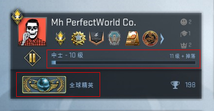经验等级
玩家可以通过各种游戏模式、大行动通行证任务、参与监管系统等获得经验，提升经验等级，并且只能通过官方服务器来获取经验，如果玩家在第三方服务器或在线下与电脑玩家进行游戏，将不会获得任何经验。
根据不同的玩法模式和每一局游戏的战果，可以获得不同的经验数值。每周参与游戏可以享受到周常经验奖励加成，周常经验随获取经验总额改变，奖励十分丰富。
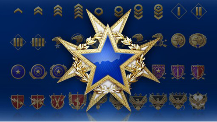水平组等级
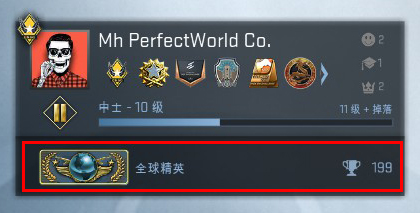在玩家经验等级达到2级，且竞技模式获胜10盘后，会开启水平组等级。在未出水平组期间，每日只计算2局竞技模式胜利，来确保水平组稳定。匹配系统也会根据玩家的水平组为玩家匹配实力相近的对手。
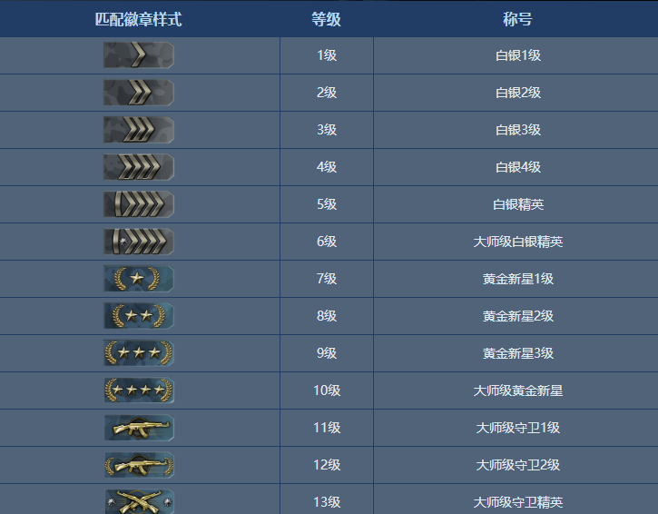《CS：GO》成就统计分为战术策略、战斗技巧、武器专家、地图专家及军竞爆破五大模块。
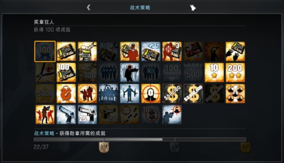 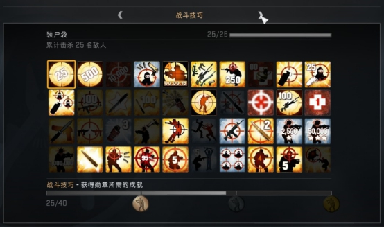 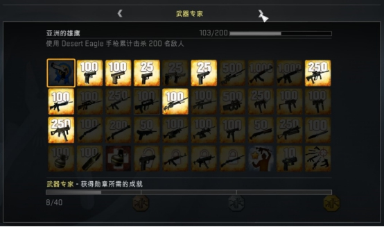 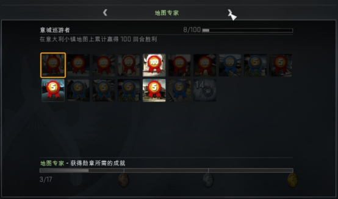 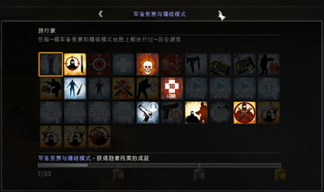具体成就列表：
目前总成就：167个
1.大煞四方：累计对敌人造成2,500点伤害
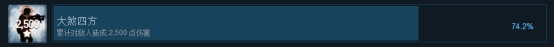2.把他们射得屁滚尿流：杀死一名正在装填弹药的敌人
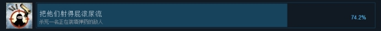CS:GO游戏内容观战系统，通过该系统玩家可以在游戏内直接观看锦标赛、我的比赛、直播、已下载、实况等。
| 锦标赛可以观看自2013年起的所有锦标赛中的比赛，同时在观战系统中还包含了梦幻战队、战队竞猜的玩法。观看锦标赛有几率掉落纪念品武器箱，该类型箱子无需钥匙开启，且均自带赛事、战队、选手签名的金色印花。（龙狙可就是观战掉落的箱子才能开出来哦。）
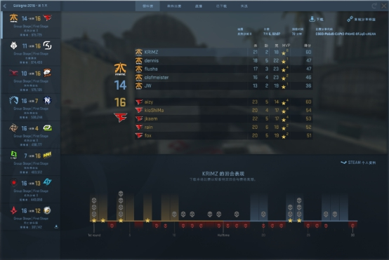 | 我的比赛我的比赛中，会记录最近8场竞技模式比赛的数据，通过这里可以看到每盘比赛自己的表现，比如总得分、KDA值、比分、每回合表现、队友资料等。同时，在下载了录像之后，还可以回顾每回合的录像。
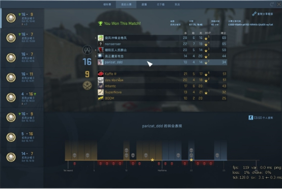 | 直播通过GOTV观看直播，可以观看目前在进行竞技模式的高水平组比赛。
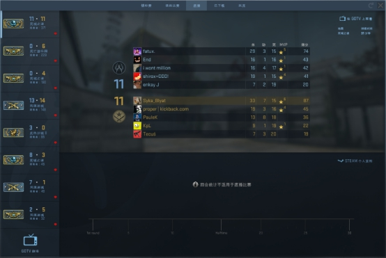 | 已下载可以下载锦标赛和自己的比赛来观看，或者来制作一些个人的精彩集锦。
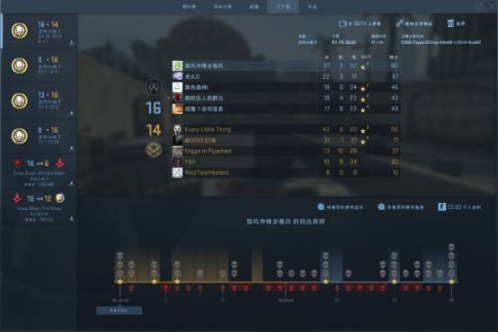 | 实况关联Twitch所有CS:GO玩家直播，Steam关联Twitch后获得观看官方赛事时掉落物品资格。
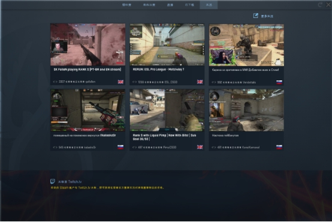打开游戏后点击【游戏设置】，打开【启用开发者控制台（~）】，然后按“~”，即可调出控制台。
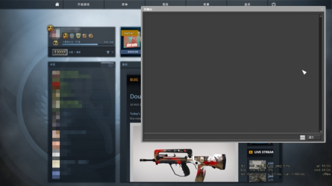
京ICP备15025398号-2《网络文化经营许可证》编号： 京网文[2017]8929-1007号
 文网游进字[2017] 0084号
新广出审[2017] 6738号 皖网文许字[2014]1281-020号 ISBN: 978-7-7979-0692-0 | 家长监护 |
纠纷处理
文网游进字[2017] 0084号
新广出审[2017] 6738号 皖网文许字[2014]1281-020号 ISBN: 978-7-7979-0692-0 | 家长监护 |
纠纷处理